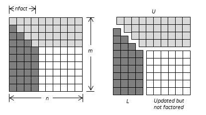

Intel® oneAPI Math Kernel Library Developer Reference - Fortran
Performs LU factorization (complete or incomplete) of a general matrix without pivoting.
call mkl_sgetrfnpi (m, n, nfact, a, lda, info)
call mkl_dgetrfnpi (m, n, nfact, a, lda, info )
call mkl_cgetrfnpi (m, n, nfact, a, lda, info )
call mkl_zgetrfnpi (m, n, nfact, a, lda, info )
call mkl_getrfnpi ( a [, nfact] [, info] )
The routine computes the LU factorization of a general m-by-n matrix A without using pivoting. It supports incomplete factorization. The factorization has the form:
A = L*U,
where L is lower triangular with unit diagonal elements (lower trapezoidal if m > n) and U is upper triangular (upper trapezoidal if m < n).
Incomplete factorization has the form:
where L is lower trapezoidal with unit diagonal elements, U is upper trapezoidal, and is the unfactored part of matrix A. See the application notes section for further details.
Use ?getrf if it is possible that the matrix is not diagonal dominant.
The data types are given for the Fortran interface.
INTEGER. The number of rows in matrix A; m≥ 0.
INTEGER. The number of columns in matrix A; n≥ 0.
INTEGER. The number of rows and columns to factor; 0 ≤nfact≤ min(m, n). Note that if nfact < min(m, n), incomplete factorization is performed.
REAL for mkl_sgetrfnpi
DOUBLE PRECISION for mkl_dgetrfnpi
COMPLEX for mkl_cgetrfnpi
DOUBLE COMPLEX for mkl_zgetrfnpi
Array of size (lda,*). Contains the matrix A. The second dimension of a must be at least max(1, n).
INTEGER. The leading dimension of array a. lda≥ max(1, m).
Overwritten by L and U. The unit diagonal elements of L are not stored.
When incomplete factorization is specified by setting nfact < min(m, n), a also contains the unfactored submatrix . See the application notes section for further details.
INTEGER. If info=0, the execution is successful.
If info = -i, the i-th parameter had an illegal value.
If info = i, uii is 0. The requested factorization has been completed, but U is exactly singular. Division by 0 will occur if factorization is completed and factor U is used for solving a system of linear equations.
Routines in Fortran 95 interface have fewer arguments in the calling sequence than their FORTRAN 77 counterparts. For general conventions applied to skip redundant or reconstructible arguments, see Fortran 95 Interface Conventions.
Specific details for the routine getrf interface are as follows:
Holds the matrix A of size (m,n).
The computed L and U are the exact factors of a perturbed matrix A + E, with
|E| ≤ c(min(m, n))ε |L||U|
where c(n) is a modest linear function of n, and ε is the machine precision.
The approximate number of floating-point operations for real flavors is
(2/3)n3 |
If m = n = nfact |
(1/3)n2(3m-n) |
If m>n = nfact |
(1/3)m2(3n-m) |
If m = nfact<n |
(2/3)n3 - (n-nfact)3 |
If m = n,nfact< min(m, n) |
(1/3)(n2(3m-n) - (n-nfact)2(3m - 2nfact - n)) |
If m>n > nfact |
(1/3)(m2(3n-m) - (m-nfact)2(3n - 2nfact - m)) |
If nfact < m < n |
The number of operations for complex flavors is four times greater.
When incomplete factorization is specified, the first nfact rows and columns are factored, with the update of the remaining rows and columns of A as follows:

If matrix A is represented as a block 2-by-2 matrix:
where
A11 is a square matrix of order nfact,
A21 is an (m - nfact)-by-nfact matrix,
A12 is an nfact-by-(n - nfact) matrix, and
A22 is an (m - nfact)-by-(n - nfact) matrix.
The result is
L1 is a lower triangular square matrix of order nfact with unit diagonal and U1 is an upper triangular square matrix of order nfact. L1 and U1 result from LU factorization of matrix A11: A11 = L1U1.
L2 is an (m - nfact)-by-nfact matrix and L2 = A21U1-1. U2 is an nfact-by-(n - nfact) matrix and U2 = L1-1A12.
is an (m - nfact)-by-(n - nfact) matrix and = A22 - L2U2.
On exit, elements of the upper triangle U1 are stored in place of the upper triangle of block A11 in array a; elements of the lower triangle L1 are stored in the lower triangle of block A11 in array a (unit diagonal elements are not stored). Elements of L2 replace elements of A21; U2 replaces elements of A12 and replaces elements of A22.